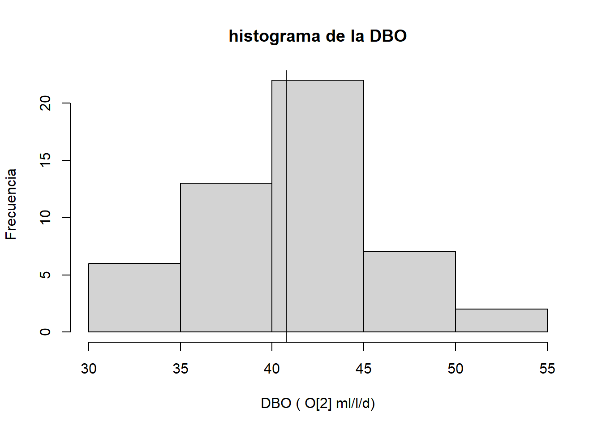
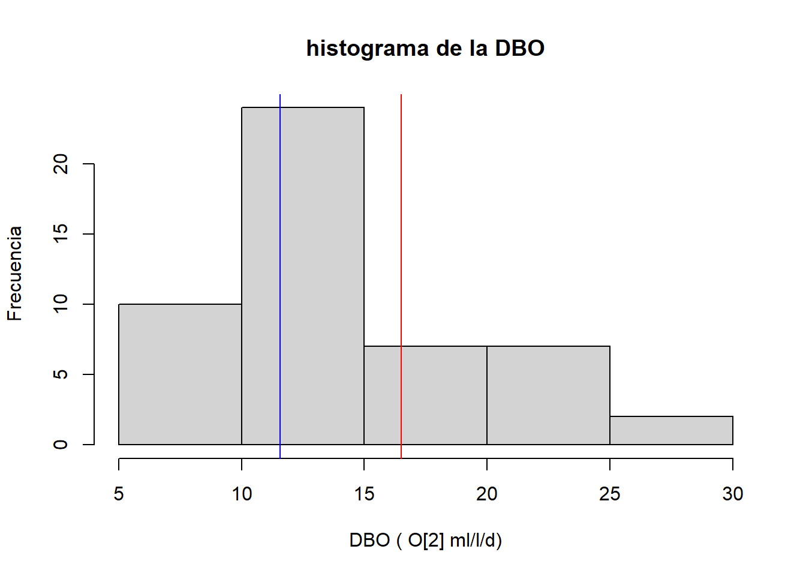
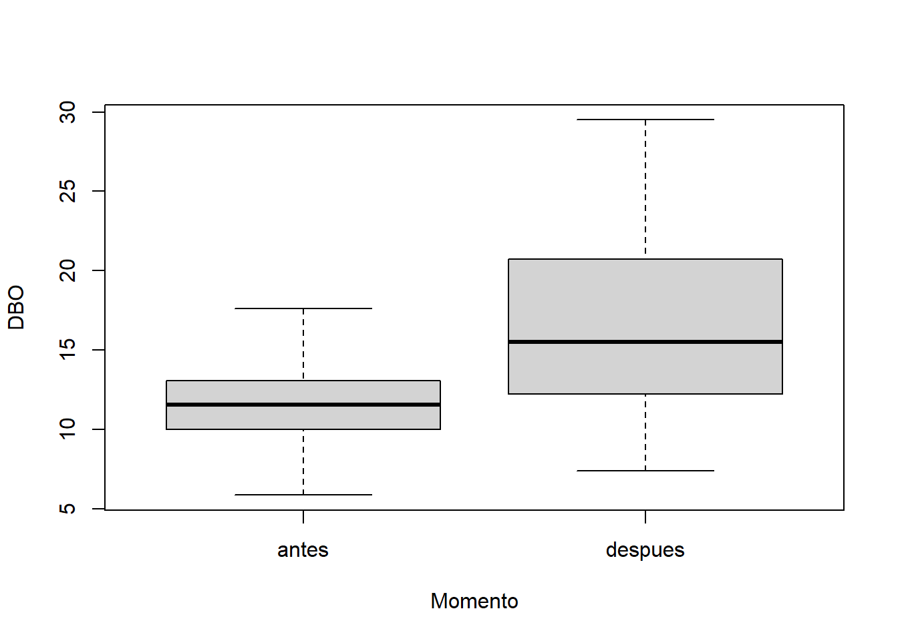

Estadística Aplicada I. Lab3: Prueba de hipótesis simples
Lo que harán ahora es:
Lea los pasos de cada ejercicio en esta actividad y ejecute los comandos que considere desde los archivos de comandos
lab2_e1.Rylab2_e2.R.Las respuesta a las preguntas escríbalas en el Documento Google. Agregue capturas de pantalla sobre los comandos definitivos que le permitieron responder la pregunta. También debe incluir los gráficos en este documento.
Distribución t-student: Ejericio 1 - Una muestra
Caso hipotético. Se requiere evaluar si una planta procesadora de celulosa está respetando los límites máximos permisibles de contaminantes en las descargas de aguas residuales vertidas al río. La normativa ambiental Mexicana especifica varias variables y límites máximo permisible para cada una, entre las que destaca la Demanda Bioquímica de Oxígeno (DBO), cuyo promedio máximo permitido es de 30 ml O2/l por día. La normativa indica que el promedio debe ser estimado de una muestra considerando 50 mediciones aleatorias en un lapso de tres meses de completa operatividad de la planta.
Importa los datos del archivo datos1.csv al ambiente R con el nombre datos1 y verifica sus características y estructura. Asegúrate que el archivo esté en el ambiente de trabajo.
Calcula la media (con la función
mean) y desviación estándar (con la funciónsd) de la DBO en la muestra y obtén un histograma (con la funciónhist) para ver su distribución. ¿Te parece que tienen una distribución normal? Confirma que los resultados que obtienes y el gráfico queden así:
- ¿cuál es el error estándar de la media? ¿Es un valor grande o pequeño? Confirma que este es el resultado:
[1] 0.6638794Define la hipótesis alternativa y luego la Hipótesis nula. Aplica una prueba de t para una sola muestra, usando el comando
t.test, pero antes de efectuar la prueba debes definir el alfa para rechazar la Hipótesis nula. Utiliza la ayudahelppara escribir los argumentos correctos det.test(tip: los mas importantes son mu y alternative)A partir del resultado obtenido (output o salida) responde a las siguientes preguntas:
- ¿Cuál fue el valor de t que obtuviste?
- ¿Cuál es el valor de probabilidad asociado a ese valor de t?
- ¿Existen evidencias suficientes para considerar que DBO de las aguas redisuales superan los valores de la norma?
- ¿Cuáles son los límites inferior y superior del intervalo de confianza al 95%?
Vamos a calcular el intervalo de confianza paso por paso. Para ello requerimos contar con el valor de t que separa la curva en zonas de baja y alta probabilidad de ocurrir (dos colas, cada una de probabilidad alfa/2). Este valor se obtiene con la función
qty requiere de tres argumentos esenciales (p = 0.025, df = 49, lower.tail = TRUE. Usa elhelppara tener más detalles de esta función).- ¿Son un error los valores negativos de esta función? ¿Por qué?
- ¿Cómo puedes obtener un valor positivo?
- ¿Por qué razón usamos una probabilidade de 0.025, si el intervalo de confianza es de 95%?
- ¿Por qué usamos n-1 en vez de n? Ahora, multiplica el valor de t-student (absoluto) por el valor de error estándar calculado antes.
- ¿Qué obtuviste con esta operación?
- ¿Cuáles son las unidades de esta medida? Finalmente suma y resta el intervalo (al 95%) a la media para conocer los límites superior e inferior.
- Compara los valores obtenidos con el resultado de la función usada para hacer la prueba de hipótesis.
Calcula el intervalo de confianza al 99%?
- ¿En cuál de los dos intervalos (95% o 99%) tengo más confianza de encontrar la media si repito el experimento?
- ¿Cuál de los dos intervalos es más ancho?
- ¿Qué le sucedería al intervalo si en vez de 50 mediciones, tuviese solo 5 mediciones?
- Verifica tu conclusión (PISTA: usa la función
qt)
¿Qué sucedería con el IC al 95% si la DBO de los efluentes fuese mas variable? Obtén un histograma y verifica tu conclusión mediante una simulación usando la función
rnorm(PISTA: mantén la muestra simulada en n=50, y la media en 40).
Distribución t-student: Ejericio 2 - Dos muestras
Continuamos con el caso hipotético. Con el análisis anterior se evidenció que la planta procesadora de papel vierte agua con mayor DBO de la que establece la normativa Mexicana. Sin embargo, esto no implica que haya ocurrido un impacto ambiental, ya que habría que comprobar el impacto (cambio en la DBO antes y después de la operatividad de la planta). Previendo esto, antes de la puesta en desarollo de la planta, se efectuó un Estudio Ambiental de Línea Base, en el que se midió la DBO tres meses antes de operaciones, y luego a los seis meses de operaciones.
Importa los datos del archivo datos2.csv al ambiente R con el nombre datos2 y verifica sus características y estructura. Asegúrate que el archivo esté en el ambiente de trabajo.
Obtén los nombres de las variables en el archivo y sigue las siguientes instrucciones:
- Identifica el vector que contiene la variable que se pretende analizar, y establece si ésta es contínua o discreta.
- Identifica el vector que contiene el factor ‘origen’. ¿Cuántos niveles tiene dicho factor?
- ¿Cuál es la unidad experimental en este estudio?
- ¿Cuántas réplicas fueron medidas en cada nivel? ¿Consideras este diseño uno balanceado?
Contruye un histograma con
histpara para la variableDBOsin distinguir el momento, pero agregue dos líneas verticales para cada promedio. Luego obtén un gráfico de cajas-bigotes agrupando datos según el Momento. PISTA: usa la funciónboxplot, busca cómo se usa esta función. ¿cuál representación gráfica te parece más informativa? Explica la respuesta. Confirma que obtienes estos gráficos:


Describe las características de ambos momentos en términos de sus medias, dispersiones y la forma aproximada de sus distribuciones. Ayudate calculando estos estadísticos con las funciones
summary,mean, ysd. ¿Cuáles de estas características son parecidas y cuáles diferentes entre las dos muestras? ¿cuál es el error estándar de la media de cada momento?¿qué significa esto respecto a cada momento?Formula la hipótesis del modelo y la hipótesis nula, y define si se trata de una prueba de una o dos colas. Obten el valor crítico de la distribución de t-student para rechazar la hipótesis nula. Considera un alfa = 0.05, y grados de libertad = n1+n2-2.
Aplica una prueba de t-student para dos muestras independientes (S3 method for class formula), y responde a las siguientes preguntas:
- ¿Cuál es el valor de t obtenido? ¿Es grande o pequeño?
- ¿Cuál es la probabilidad asociada al valor de t obtenido? ¿Es grande o pequeña?
- ¿Cuál es la conclusión de la prueba que aplicaste?
- ¿Podrías enlistar tres de las condiciones más importantes que deben cumplir los datos para interpretar adecuadamente e resultado de una prueba t clásica?
Considera que las varianzas de estas dos muestras son lo suficientemente similares como para asumirlas iguales, y aplica una prueba de t-student para varianzas iguales. (PISTA: revisa la informacion del
helpdet.test)Compara los resultados de ambas pruebas y responde a las siguientes preguntas:
- ¿Qué ocurre con el valor de t cuando asumes homogeneidad de varianzas aún cuando no la hay?
- ¿Qué ocurre con el valor de probabilidad asociado al estadístico t cuando asumes homogeneidad de varianzas y no la hay?
- ¿Qué ocurre con los grado de libertad?
- ¿Cuál de las dos pruebas es más conservadora (i.e., tiene menos probabilidad de caer en errores tipo I)?
- ¿Confías más en el resultado de la primera prueba o en el de la segunda? Explica tu respuesta.